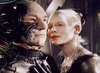
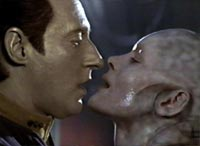
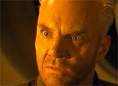
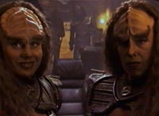
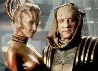

|
Os
viles de Jornada nas Estrelas, Parte II
 Em
termos de vilania, o que a Nova Gerao apresentou at
agora d o primeiro lugar para a Rainha Borg, interpretada por
Alice Krige. O Doutor Soran ocupa a segunda posio, com o bom
desempenho de Malcolm McDowell, veterano do gnero e tio de
Alexander "Bashir" Siddig, de acordo com fontes
autorizadas. Em
termos de vilania, o que a Nova Gerao apresentou at
agora d o primeiro lugar para a Rainha Borg, interpretada por
Alice Krige. O Doutor Soran ocupa a segunda posio, com o bom
desempenho de Malcolm McDowell, veterano do gnero e tio de
Alexander "Bashir" Siddig, de acordo com fontes
autorizadas.
F. Murray Abraham e seu personagem So'na, o malvado Ru'afo, iou a
lanterninha, apesar de j ter sido vilo em outros filmes com
tremendo sucesso, como em "Amadeus" e "O Nome da
Rosa".
 O
sucesso da Rainha Borg est relacionado fama que este povo
ganhou desde a produo do seriado na televiso. Os Borgs
apresentaram uma boa dose de ao, efeitos especiais, luta e uma
serssima ameaa boa vida da Federao --principalmente a
partir de "The Best of Both Worlds", na passagem do
terceiro para o quarto ano de vida da srie.
Sua aceitao foi tanta que eles serviram de rivais para o melhor
filme da Nova Gerao at agora. Com a Voyager
batendo pino pelo Quadrante Delta, Rick Berman e sua equipe
resolveram requentar os Borgs para ajudar a salvar a ptria e a
audincia das aventuras de Janeway e sua turma. Eles apareceram e
retornaram vrias vezes, como um trunfo a ser usado quando
necessrio, inclusive, nos dois ltimos episdios.
Tanto foi assim que Seven of Nine passou a ser um membro da
tripulao da nave e a Rainha Borg visitou-a algumas vezes.
 A
maldade da Rainha! Isto no meio parecido com as historinhas dos
contos de fadas? Mas no podemos negar que o confronto dela com
Picard/Locutus e Data causou uma boa linha de ao na trama
registrada no roteiro. O seu comportamento malicioso e sensual gerou
arrepios no s no andride, como tambm, na maioria da galera.
No demais lembrar a cena de sua montagem na rea invadida por
ela no interior da Enterprise. Isto valeu uma indicao de
premiao de melhor maquiagem.
 Soran
pareceu perdido no tempo/espao com aquela cara de garoto malvado e
ressentido. Ele entrou no filme s para matar Kirk, apesar da
justificativa do roteiro que envolvia a tentativa de sua entrada no
Nexus. Na poca da estria do filme, ouvi dizer por a que Marlon
Brando tinha se oferecido para o papel, mas Rick Berman recusou-o.
Melhor para Brando...
 As
irms Duras, francamente, pareciam ser membros da famlia dos
Irmos Metralha. O negcio delas era derrubar a Enterprise, s
para deixar Picard irritado. Como as cenas de tortura de La Forge
foram cortadas, no deu nem pra dizer que elas tinham um jeito to
malvado assim. Tudo bem que o triltio estava na barganha com a
finalidade de tentar outro golpe de Estado no Imprio Klingon. Mas,
nem de longe, podemos levar a srio o jeito pelo qual elas foram
aproveitadas.
 Em
"Insurreio", temos um Ru'afo vingativo e
preocupado em rejuvenescer passando a perna na Federao, e boa
parte da Frota Estelar. Eu j disse aqui: foi uma briguinha de
famlia mal-contada. Como se j no bastasse a sua maldade,
tivemos que aturar seus gritos e trejeitos.
Tudo foi estereotipado demais! possvel que, no futuro, venhamos
a saber com mais detalhes porque Frakes dirigiu um filme to
problemtico. Especula-se que a sua ausncia da cadeira de diretor
no prximo filme tenha a ver com isso.
Minha esperana ainda repousa nos Romulanos. Quem sabe um dia
poderemos ver suas caractersticas e seus personagens marcantes
revividos e desenvolvidos na tela grande de um jeito que as pessoas
merecem.
Falando nisso, aproveito o momento e aviso que tratarei da prxima
vez em diante daquilo que temos sabido por a a respeito do
prximo filme. Sinceramente, j adianto que tenho uma forte
impresso de que, num certo sentido, a vaca t indo pro brejo...
Cludio
Silveira escreve regularmente sobre os filmes com
exclusividade para o Trek Brasilis
|